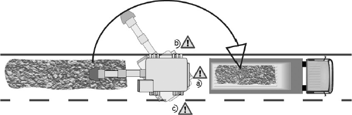
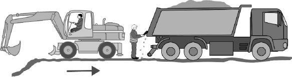

Dieser Anhang erläutert anhand ausgewählter Beispiele die Ermittlung und Durchführung von Maßnahmen durch den Arbeitgeber gegen die Gefährdung von Beschäftigten auf Baustellen durch Anfahren, Überfahren oder Quetschen aufgrund der Fahrbewegungen von mobilen Arbeitsmitteln beim Rückwärtsfahren. Die im Folgenden dargestellte Vorgehensweise orientiert sich insbesondere an den Nummern 3.2.1 und 3.3.1 dieser TRBS. Um den Umfang der Beispiele überschaubar zu halten, beschränken sich die Beispiele auf die Darstellung spezifischer Gesichtspunkte. Bei der Übertragung der hier dargestellten Lösungen auf andere Fälle sind die tatsächlichen betrieblichen Gegebenheiten zu berücksichtigen.
Bei eingeschränkter Sicht hat der Arbeitgeber unter Berücksichtigung der Nummer 3.2.1 dieser TRBS vorrangig technische Maßnahmen zu ergreifen, die ergänzt werden durch organisatorische Maßnahmen im Sinne von Nummer 3.3.1 Buchstabe e) und f) dieser TRBS und durch personenbezogene Maßnahmen im Sinne von Nummer 3.4 dieser TRBS.
Die Gefährdung durch rückwärtsfahrende mobile Arbeitsmittel betrifft die Beschäftigten aller auf der Baustelle zusammenarbeitenden Arbeitgeber. Daher haben die beteiligten Arbeitgeber gemäß § 13 BetrSichV bei ihren Gefährdungsbeurteilungen zusammenzuwirken und die Schutzmaßnahmen so abzustimmen und durchzuführen, dass diese wirksam sind.
Bei einer erhöhten Gefährdung von Beschäftigten anderer Arbeitgeber ist gemäß § 13 Absatz 3 BetrSichV für die Abstimmung der jeweils erforderlichen Schutzmaßnahmen durch die beteiligten Arbeitgeber ein Koordinator/eine Koordinatorin schriftlich zu bestellen. Sofern aufgrund anderer Arbeitsschutzvorschriften bereits ein Koordinator/eine Koordinatorin bestellt ist (z. B. Sicherheits- und Gesundheitsschutz-Koordinator (SiGeKo) nach Baustellenverordnung (BaustellV)), kann dieser/diese auch die Koordinationsaufgaben nach der Betriebssicherheitsverordnung übernehmen.
Die in diesem Abschnitt dargestellten Beispiele beziehen sich jeweils auf ein bestimmtes mobiles Arbeitsmittel in einer konkreten Verwendungssituation. Der Arbeitgeber hat hierfür nach Nummer 3.3.1 Buchstabe e) dieser TRBS die erforderlichen Sichtverhältnisse zu ermitteln und festzulegen.
In allen Beispielen wird davon ausgegangen, dass die direkte Sicht des Fahrers nicht ausreicht, um die Sicherheit anderer Beschäftigter zu gewährleisten, sodass zusätzliche Schutzmaßnahmen erforderlich sind. Entsprechend der in § 4 Absatz 2 Satz 2 BetrSichV festgelegten Rangfolge haben technische Schutzmaßnahmen Vorrang vor organisatorischen, diese haben wiederum Vorrang vor personenbezogenen Schutzmaßnahmen.
Bei den in Nummer 4 beschriebenen Beispielen wird jeweils auf die gleiche Auswahl von technischen Schutzmaßnahmen eingegangen, aus denen der Arbeitgeber eine wirksame Maßnahmenkombination zusammenstellen kann. Dabei wird nicht auf die dauerhafte optische oder akustische Warnung beim Rückwärtsfahren eingegangen, da diese unter Berücksichtigung von TRBS 2111 Nummer 4.6.1 Absatz 2 als Maßnahme für die hier behandelten Verwendungssituationen grundsätzlich nicht geeignet ist.
Für jedes Verwendungsbeispiel werden charakteristische Gesichtspunkte erläutert, die für oder gegen die Auswahl der jeweiligen Maßnahme sprechen.
Bei der Prüfung, ob ein Kamera-Monitor-System (KMS) für die vorgesehene Verwendung eines mobilen Arbeitsmittels geeignet ist, sind u. a. folgende Randbedingungen zu berücksichtigen:
Bei der Prüfung, ob ein Sensorsystem für die vorgesehene Verwendung eines mobilen Arbeitsmittels geeignet ist, sind u. a. folgende Kriterien zu berücksichtigen:
In den folgenden Beispielen werden nur die für das jeweilige Beispiel hinsichtlich der Gefährdung durch das Rückwärtsfahren spezifischen technischen und organisatorischen Schutzmaßnahmen aufgeführt. Ergänzende allgemeine organisatorische und personenbezogene Maßnahmen, die für alle Beispiele zutreffen, sind in Nummer 5 aufgeführt.
Beispiel 1: Bagger (ca. 18 t) beim Ausheben eines Grabens und Beladen eines rückwärtig hinter ihm stehenden Lkw
1. Betrachtete Arbeitssituation
Im Rahmen einer Baumaßnahme wird am rechten Straßenrand ein Graben ausgehoben. Der Aushub wird in stetem Wechsel mit Kippsattel-Zügen abtransportiert. Aufgrund der örtlichen Verhältnisse können die Sattelzüge während der Beladung nicht neben dem Bagger stehen. Daraus ergibt sich, dass der Bagger vor Kopf den Graben aushebt und den im Heck stehenden Kippsattel belädt. Hierbei schwenkt der Bagger bei jedem Ladezyklus um 180 ° nach rechts. Nach Abschluss der Beladung kontrolliert der Lkw-Fahrer das Fahrzeug und reinigt erforderlichenfalls die Heckpartie des Lkw. Dabei betritt er ggf. den Gefahrenbereich zwischen Bagger und Lkw.
Es bestehen folgende Gefahrenbereiche:
| a) | zwischen Bagger und Lkw |
| b) | rechts neben dem Bagger |
| c) | links neben dem Bagger |
In diesem Beispiel wird nur der Gefahrenbereich a) ausdrücklich behandelt. Der Arbeitgeber muss bei der Auswahl geeigneter Schutzmaßnahmen auch die Gefahrenbereiche b) und c) berücksichtigen.

Abb. 1: Gefahrenbereiche zu Beispiel 1

Abb. 2: Gefährdung durch Rückwärtsfahren des Baggers
Unfallbegünstigende Umstände:
2. Maßnahmen
2.1 Technische Maßnahmen:
| Maßnahme | Anforderungen/Hinweise | Eignung |
| Kamera-Monitor-Systeme |
| geeignet |
| Spiegel | Gefahrenbereich im Heck kann nicht über Spiegel im vorderen Sichtbereich des Fahrers eingesehen werden. Die Anbringung von Spiegeln im hinteren Sichtbereich sowie Spiegel-zu-Spiegel-Systeme entsprechen nicht dem Stand der Technik. | nicht geeignet |
| Sensortechnik zur Warnung des Fahrers (Nahbereich) | Aufgrund der räumlichen Enge kann eine zuverlässige Warnung i. d. R. nicht realisiert werden. Es steht keine Sensortechnik zur Verfügung, die in einer vergleichbaren Verwendungssituation mit Erfolg in der Praxis erprobt worden ist. | nicht geeignet |
In diesem Beispiel ist als technische Maßnahme nur ein Kamera-Monitor-System geeignet.
2.2 Organisatorische Maßnahmen:
| Maßnahme | Anforderungen/Hinweise | Eignung |
| Organisation der Ladestelle | Ausreichenden Bewegungsraum so vorsehen, dass der Lkw nach Beendigung des Ladevorgangs soweit vorziehen kann, dass erforderliche Kontroll- und Reinigungsarbeiten am Fahrzeugheck außerhalb des Gefahrenbereichs durchgeführt werden können. | geeignet |
| Sicherung oder Absperrung des Fahr- und Arbeitsbereiches | Anbringen einer festen Absperrung gegen das Betreten
des Gefahrenbereichs. Als Schutzmaßnahme nicht geeignet, da aufgrund der geometrischen Gegebenheiten in diesem Beispiel eine wirksame Absperrung nicht realistisch ist. | nicht geeignet |
Beispiel 2: Betontransportfahrzeug (Fahrmischer) bei der Anlieferung von Beton
1. Betrachtete Arbeitssituation
Ein Betontransportfahrzeug liefert Beton unmittelbar an eine Betonpumpe. Aufgrund der räumlichen Verhältnisse wird in der Regel das Heck der Betonpumpe angefahren, wobei das Betontransportfahrzeug rückwärts fährt. Das Betontransportfahrzeug legt dabei nur vergleichsweise kurze Fahrstrecken rückwärts zurück. Die Fahrgeschwindigkeit liegt unter 10 km/h. In der Regel wird unmittelbar nach der Beendigung des Entladevorgangs unverzüglich das nächste Betontransportfahrzeug zur Entladung an die Heckseite der Betonpumpe angestellt.
In diesem Beispiel werden folgende Gefahrenbereiche betrachtet:
Der unmittelbare Gefahrenbereich hinter dem Betontransport beim Rangieren auf der Baustelle und beim Heranfahren an die Betonpumpe.
Unfallbegünstigende Umstände:
2. Maßnahmen
2.1 Technische Maßnahmen:
| Maßnahme | Anforderungen/Hinweise | Eignung |
| Kamera-Monitor-System |
| geeignet |
| Spiegel | Der Gefahrenbereich im Heck kann vom Fahrerplatz aus nicht über Spiegel eingesehen werden. | nicht geeignet |
| Sensortechnik zur Warnung des Fahrers | Nur Sensortechnik einsetzen, die zur Erfassung von
Personen vorgesehen ist. Sensortechnik zur Warnung des Fahrers hat sich im Lkw-Einsatz bewährt, z. B. auf der Basis von Ultraschallsensoren. Hinweise des Herstellers sind zu berücksichtigen. | geeignet als Ergänzung zum Kamera-Monitor-System |
In diesem Beispiel ist als technische Maßnahme ein Kamera-Monitor-System geeignet. Durch die Kombination von Kamera-Monitor-Systemen mit Sensortechnik zur Warnung des Fahrers kann die Wahrnehmung von Personen im Gefahrenbereich erhöht werden.
2.2 Organisatorische Maßnahmen:
| Maßnahme | Anforderungen/Hinweise | Eignung |
| Fläche zum Rangieren schaffen | Ausreichende Fläche zum Rangieren der Betontransportfahrzeuge vorsehen und so einrichten, dass diese jeweils schon wenden können, während das vorherige Fahrzeug an der Betonpumpe entleert wird. | geeignet |
| Absperrung des Fahr- und Arbeitsbereiches | Anbringen einer festen Absperrung, die das Betreten
des Gefahrenbereichs durch jegliche Beschäftigte
wirksam verhindert. Als Schutzmaßnahme nicht geeignet, da aufgrund des Arbeitsprozesses in diesem Beispiel eine wirksame Absperrung nicht realistisch ist. | nicht geeignet |
Beispiel 3: Zulieferfahrzeug (Lkw-Anlieferung durch eine Spedition)
1. Betrachtete Arbeitssituation
Mittels Lkw werden Materialien auf einer Baustelle angeliefert.
Auf einer Baustelle erfolgt die Anlieferung verschiedenster Materialien mittels Lkw. Insgesamt kommen unterschiedliche Lkw zum Einsatz, die in vielen Fällen nicht speziell für den Einsatz auf Baustellen vorgesehen sind. Die Anlieferungen finden an unterschiedlichen Orten des Baufeldes statt. In der Regel handelt es sich um isolierte Anlieferungsvorgänge, sodass die Fahrer nicht in allen Fällen mit den Gegebenheiten der Baustelle vertraut sind. Zum Entladen fährt der Lkw häufig rückwärts an die Ladestelle heran. Die Fahrgeschwindigkeit liegt unter 10 km/h, in der Regel bei Schrittgeschwindigkeit.
In diesem Beispiel werden folgende Gefahrenbereiche betrachtet:
Der unmittelbare Gefahrenbereich hinter dem anliefernden Lkw beim Rangieren auf der Baustelle und beim Rückwärtsfahren an der Ladestelle.
Unfallbegünstigende Umstände:
2. Maßnahmen
2.1 Technische Maßnahmen:
| Maßnahme | Anforderungen/Hinweise | Eignung |
| Kamera-Monitor-System |
| geeignet |
| Spiegel | Der Gefahrenbereich im Heck kann vom Fahrerplatz aus nicht über Spiegel eingesehen werden. | nicht geeignet |
| Sensortechnik zur Warnung des Fahrers | Nur Sensortechnik einsetzen, die zur Erfassung von
Personen vorgesehen ist. Sensortechnik zur Warnung des Fahrers hat sich im Lkw-Einsatz bewährt, z. B. auf der Basis von Ultraschallsensoren. Hinweise des Herstellers sind zu berücksichtigen. | geeignet als Ergänzung zum Kamera-Monitor-System |
In diesem Beispiel ist als technische Maßnahme ein Kamera-Monitor-System geeignet. Durch die Kombination von Kamera-Monitor-Systemen mit Sensortechnik zur Warnung des Fahrers kann die Wahrnehmung von Personen im Gefahrenbereich erhöht werden.
2.2 Organisatorische Maßnahmen:
| Maßnahme | Anforderungen/Hinweise | Eignung |
| Verkehrswege einrichten und kennzeichnen | Einrichtung und Kennzeichnung geeigneter Verkehrswege auf der Baustelle. | geeignet |
| Flächen für die Entladung von Fahrzeugen vorsehen | Ausweisen von Flächen für die Anlieferung und Entladung für Zulieferfahrzeuge. | geeignet |
| Fahr- und Arbeitsbereich absperren | Anbringen einer festen Absperrung, die das Betreten
des Gefahrenbereichs durch jegliche Beschäftigten
wirksam verhindert. Dabei ist zu berücksichtigen: Aufgrund der Vielzahl und Verschiedenartigkeit der Anliefervorgänge ist in diesem Beispiel eine wirksame Absperrung nicht realistisch. | nicht geeignet |
Beispiel 4: Anlieferung von Asphalt im Asphaltanbau mittels Kippsattelzug
1. Betrachtete Arbeitssituation
Auf einer Straßenbaustelle erfolgt die Anlieferung von Asphalt zum Einbauort mittels Kippsattelzug. In der Regel wird dabei das Heck des Straßenfertigers angefahren. Im Beispiel wird aufgrund äußerer Gegebenheiten von einer linienförmigen Baustellengeometrie in Straßenlängsrichtung ausgegangen, sodass vergleichsweise längere Strecken rückwärts gefahren werden müssen.
In diesem Beispiel werden folgende Gefahrenbereiche betrachtet:
Der Gefahrenbereich hinter dem anliefernden Sattelkipper beim Zurücklegen längerer Rückfahrstrecken. Das unmittelbare Rangieren im Nahbereich des Straßenfertigers entspricht der Arbeitssituation im Beispiel 2, Schutzmaßnahmen sind entsprechend anzupassen.
Unfallbegünstigende Umstände:
2. Maßnahmen
2.1 Technische Maßnahmen:
| Maßnahme | Anforderungen/Hinweise | Eignung |
| Kamera-Monitor-System |
| geeignet |
| Spiegel | Der Gefahrenbereich im Heck kann vom Fahrerplatz aus nicht über Spiegel eingesehen werden. | nicht geeignet |
| Sensortechnik zur Warnung des Fahrers | Nur Sensortechnik einsetzen, die zur Erfassung von
Personen vorgesehen ist. Sensortechnik zur Warnung des Fahrers hat sich im Lkw-Einsatz bewährt. Der Erfassungsbereich der Sensoren muss den zu erwartenden Fahrgeschwindigkeiten und der Beschaffenheit des Fahrweges angepasst sein. Hinweise des Herstellers sind zu berücksichtigen. | geeignet als Ergänzung zum Kamera-Monitor-System |
In diesem Beispiel ist als technische Maßnahme ein Kamera-Monitor-System geeignet. Durch die Kombination von Kamera-Monitor-Systemen mit Sensortechnik zur Warnung des Fahrers kann die Wahrnehmung von Personen im Gefahrenbereich erhöht werden.
2.2 Organisatorische Maßnahmen:
| Maßnahme | Anforderungen/Hinweise | Eignung |
| Rückfahrstrecken minimieren | Bei der Planung und Einrichtung der Baustelle darauf
hinwirken, dass Rückfahrstrecken so gering wie
möglich gehalten werden. Dabei ist zu berücksichtigen: Die vom SiGeKo festgelegten Maßnahmen zur Minimierung von Rückfahrstrecken. | geeignet |
| Staubentwicklung reduzieren | Maßnahmen zur Reduzierung der Staubentwicklung auf der Baustelle treffen. | geeignet |
| Fahr- und Arbeitsbereich absperren | Anbringen einer festen Absperrung, die das Betreten
des Gefahrenbereichs durch jegliche Beschäftigten
wirksam verhindert. Dabei ist zu berücksichtigen: Aufgrund der linienförmigen Geometrie der Baustelle ist eine wirksame Absperrung nicht realistisch. | nicht geeignet |
| Einweisen des Fahrzeugs | Aufgrund der Fahrgeschwindigkeiten und Fahrstrecken nicht realistisch. | nicht geeignet |
Beispiel 5: Verwendung eines Radladers (18 t) zur Verladung von Schüttgut auf Lkw
1. Betrachtete Arbeitssituation
Zur Verladung einer größeren Menge von Schüttgut auf Lkw wird ein großer Radlader (18 t) eingesetzt. Der Radlader nimmt wiederkehrend Schüttgut auf, setzt zurück, fährt vorwärts zum Lkw, kippt dort ab, setzt zurück und fährt wieder vorwärts in das Schüttgut. Dieser Ladezyklus wird wiederholt, bis der Lkw gefüllt ist. Anschließend wird der nächste Lkw beladen, so lange bis die Transportaufgabe abgeschlossen ist. Die Verwendungssituation des Radladers ist gekennzeichnet durch abwechselnde Vorwärts- und Rückwärtsfahrt bei vergleichsweise hoher Geschwindigkeit. In dem nachfolgenden Beispiel wird bei der Auswahl der Maßnahmen ausschließlich die Rückwärtsfahrt betrachtet. Die Fahrgeschwindigkeit des Radladers ist im Arbeitsprozess vergleichsweise hoch.
Es bestehen folgende Gefahrenbereiche:
| a) | bei Rückwärtsfahrten im Ladezyklus hinter dem Radlader; |
| b) | bei Vorwärtsfahrt mögliche Sichteinschränkungen durch die angehobene Schaufel des Radladers; |
In diesem Beispiel wird nur der Gefahrenbereich a) ausdrücklich behandelt. Der Arbeitgeber muss bei der Auswahl geeigneter Schutzmaßnahmen auch den Gefahrenbereich b) berücksichtigen.
Unfallbegünstigende Umstände:
2. Maßnahmen
2.1 Technische Maßnahmen:
| Maßnahme | Anforderungen/Hinweise | Eignung |
| Kamera-Monitor-System |
| geeignet |
| Spiegel | Der Gefahrenbereich im Heck kann vom Fahrerplatz aus nicht über Spiegel eingesehen werden. | nicht geeignet |
| Sensortechnik zur Warnung des Fahrers | Nur Sensortechnik einsetzen, die zur Erfassung von
Personen vorgesehen ist. Sensortechnik zur Warnung des Fahrers hat sich bei der Verwendung von Radladern bewährt. Der Erfassungsbereich der Sensoren muss den zu erwartenden Fahrgeschwindigkeiten und der Beschaffenheit des Fahrweges angepasst sein. Hinweise des Herstellers sind zu berücksichtigen. | geeignet als Ergänzung zum Kamera-Monitor-System |
In diesem Beispiel ist als technische Maßnahme ein Kamera-Monitor-System geeignet. Durch die Kombination von Kamera-Monitor-Systemen mit Sensortechnik zur Warnung des Fahrers kann die Wahrnehmung von Personen im Gefahrenbereich erhöht werden.
2.2 Organisatorische Maßnahmen:
| Maßnahme | Anforderungen/Hinweise | Eignung |
| Verladebereich absperren | Anbringen einer festen Absperrung, die das Betreten
des Verladebereichs durch Personen wirksam verhindert. Dabei ist zu berücksichtigen: Die wirksame Absperrung von Verladebereichen ist nur in Ausnahmefällen realistisch, da z. B. Lieferfahrzeuge verkehren. | nicht geeignet |
2.3 Personenbezogene Maßnahmen:
| Maßnahme | Anforderungen/Hinweise | Eignung |
| Transponder-Systeme (RFID-Sensor) | Ausstattung der Beschäftigten mit Transpondern,
sodass der Radladerfahrer durch ein am Radlader
angebrachtes Empfängersystem gewarnt wird, wenn
Beschäftigte sich dem Gefahrenbereich annähern. Dabei ist zu berücksichtigen: Transponder-Systeme können als Schutzmaßnahme nur eingesetzt werden, wenn eine wirksame Absperrung des Ladebereichs in Verbindung mit einer Zugangskontrolle gegeben ist. Die wirksame Absperrung von Verladebereichen ist auf Baustellen nur in Ausnahmefällen realistisch. | nicht geeignet |
Beispiel 6: Teleskopstapler (starr) bei Rückwärtsfahrt mit Gitterbox auf Gabelzinken
1. Betrachtete Arbeitssituation
Zum Transport und zur Verladung von Gitterboxen von einer hochgelegenen Fläche wird ein Teleskopstapler (nichtdrehbarer Oberwagen) eingesetzt. Der Teleskopstapler nimmt eine Gitterbox von der hochgelegenen Fläche auf, setzt zurück, fährt vorwärts zum Lkw und stellt diese auf dem Lkw ab, setzt zurück und fährt wieder vorwärts zur hochgelegenen Fläche. Zur Positionierung kann ein Rangieren in Vorwärts- und Rückwärtsrichtung erforderlich sein.
Dieser Ladezyklus wird wiederholt, bis der Lkw beladen ist bzw. keine Gitterboxen mehr zu verladen sind. Die Verwendungssituation des Teleskopstaplers ist gekennzeichnet durch abwechselnde Vorwärts- und Rückwärtsfahrt. Die Rückwärtsfahrt erfolgt bei niedrigeren Geschwindigkeiten. Bei der Rückwärtsfahrt muss neben dem rückwärtigen Fahrweg auch die aufgenommene Last und der Schwenkbereich des Teleskops beobachtet werden.
Es bestehen folgende Gefahrenbereiche:
| a) | bei Rückwärtsfahrten im Ladezyklus hinter dem Teleskopstapler; |
| b) | bei Vorwärtsfahrt mögliche Sichteinschränkungen durch den angehobenen Teleskoparm; |
In diesem Beispiel wird nur der Gefahrenbereich a) ausdrücklich behandelt. Der Arbeitgeber muss bei der Auswahl geeigneter Schutzmaßnahmen auch den Gefahrenbereich b) berücksichtigen.
Unfallbegünstigende Umstände:
2. Maßnahmen
2.1 Technische Maßnahmen:
| Maßnahme | Anforderungen/Hinweise | Eignung |
| Kamera-Monitor-Systeme |
| geeignet |
| Spiegel | Der Gefahrenbereich im Heck kann vom Fahrerplatz aus nicht über Spiegel eingesehen werden. | nicht geeignet |
| Sensortechnik zur Warnung des Fahrers (Nahbereich) | Nur Sensortechnik einsetzen, die zur Erfassung von
Personen vorgesehen ist. Der Erfassungsbereich der Sensoren muss den zu erwartenden Fahrgeschwindigkeiten und der Beschaffenheit des Fahrweges angepasst sein. Hinweise des Herstellers sind zu berücksichtigen. | geeignet als Ergänzung zum Kamera-Monitor-System |
In diesem Beispiel ist als technische Maßnahme ein Kamera-Monitor-System geeignet. Durch die Kombination von Kamera-Monitor-Systemen mit Sensortechnik zur Warnung des Fahrers kann die Wahrnehmung von Personen im Gefahrenbereich erhöht werden.
2.2 Organisatorische Maßnahmen:
| Maßnahme | Anforderungen/Hinweise | Eignung |
| Verladebereich absperren | Anbringen einer festen Absperrung, die das Betreten
des Verladebereichs durch Beschäftigte wirksam
verhindert. Dabei ist zu berücksichtigen: Die wirksame Absperrung von Verladebereichen ist nur in Ausnahmefällen realistisch, da z. B. Lieferfahrzeuge verkehren. | nicht geeignet |
2.3 Personenbezogene Maßnahmen:
| Maßnahme | Anforderungen/Hinweise | Eignung |
| Transponder-Systeme (RFID-Sensor) | Ausstattung der Beschäftigten mit Transpondern,
sodass der Teleskopstaplerfahrer durch ein am Stapler
angebrachtes Empfängersystem gewarnt wird, wenn
Beschäftigte sich dem Gefahrenbereich annähern. Dabei ist zu berücksichtigen: Transponder-Systeme können als Schutzmaßnahme nur eingesetzt werden, wenn eine wirksame Absperrung des Ladebereichs in Verbindung mit einer Zugangskontrolle gegeben ist. Die wirksame Absperrung von Verladebereichen ist auf Baustellen nur in Ausnahmefällen realistisch. | nicht geeignet |
5 Beispielübergreifende organisatorische und personenbezogene Schutzmaßnahmen
In diesem Abschnitt sind organisatorische und personenbezogene Schutzmaßnahmen zusammengefasst, die auf alle Beispiele dieses Anhangs anzuwenden sind.
Ergänzende organisatorische Maßnahmen:
Ergänzende personenbezogene Maßnahmen: